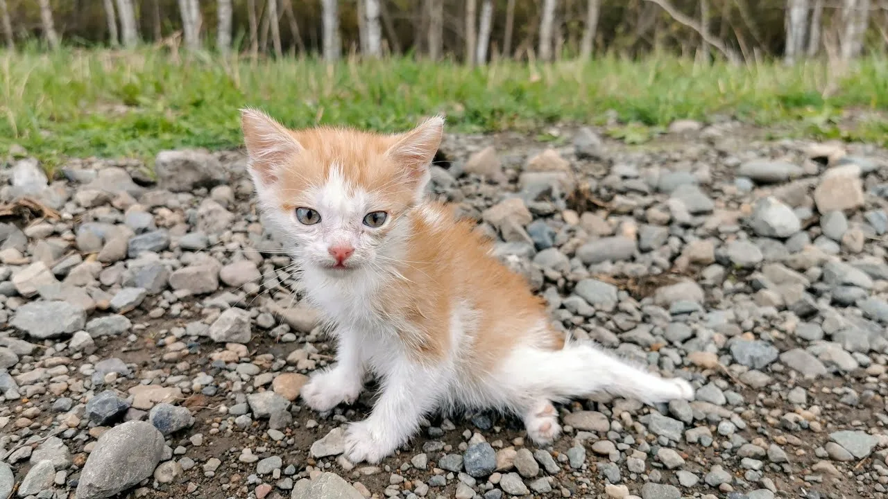

Его назвали Шишей за то, что он был маленьким, круглым и всё время шипел. Не со зла — по привычке. Шиша родился в подвале заброшенной школы, и весь мир вокруг казался ему огромным и враждебным. Он шипел на мусорные мешки, на сквозняк, на собственный хвост, который вечно лез не туда. Он научился пить лужи. Он научился есть червяков, которые выползали после дождя. Он научился прятаться в дыре под фундаментом так глубоко, что даже дворовые коты не могли его достать. Но самому главному — доверять — он не научился. И, наверное, уже не собирался.